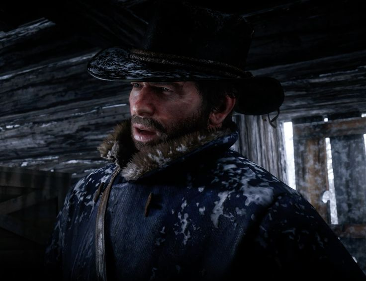
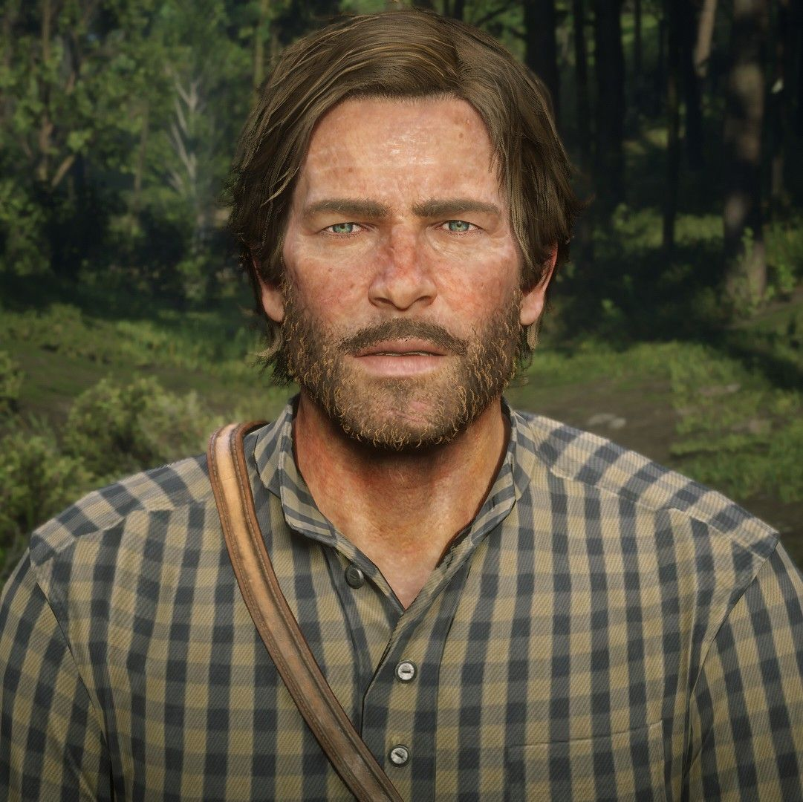
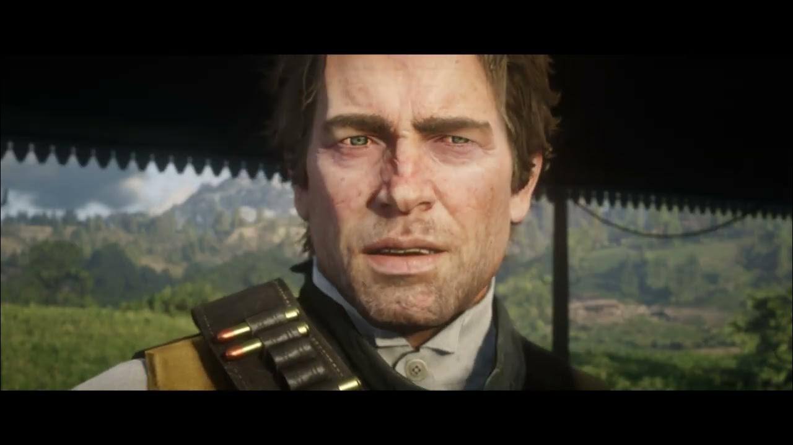
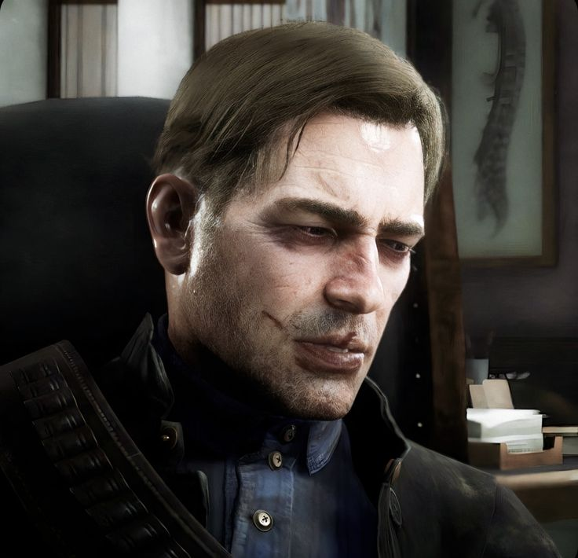

| Jump to Section | ||||||
|---|---|---|---|---|---|---|
| Sections: | Chapter 1 | Chapter 2 | Chapter 3 | Chapter 4 | Chapter 5 (Guarma) | Chapter 6 |
To this day, this guy remains not one, but the most sexy, realistic and compelling character in gaming, across all games and genres.
It is truly a mistery how Rockstar managed to create such an muscular and detailed character. We'll see if Jason from GTA 6 will spark more the r34 communities than Arthur does. Jason is maybe his only contender, but it will be really tought to thrive against Arthur's aura. But we'll see.
But now, about his backstory...
The game doesn't give us much about him, or his origins, but it does say some things. He was born in 1863, and he was a member of the Van der Sexy Gang, a group of wierdos that roamed the west, and that failded to rob Blackwater's bank. Truly pathetic.
He've been raised by the gang since the age of 13, learning the ways of the outlaw life, and being forced to live by it aswell.
It is truly interesting his interactions with the gang, and especially with his boyfriend, Dutch. He goes from trusting them in his whole life and in the start of the game to setting up a whole riot with some other gang members, creating a tense grand finale about loyalty, trust and values.
Arthur's journey throughout the game is marked by his evolving relationships, past girlfriends and moral dilemas. It is one of the best and most complex aspects of the game. His story is book-like.

He starts as an important member in the gang, with massive aura and an amazing relationship with Dutch. Always around, always loyal, never questioning his boyfriend. He is the beautiful that makes the gang work. He is the guy that brings it togheter, rescuing John from dying frozen, and just helping around.

Now the gang's out the mountains, and ready to face the new US, a more civilized and modernized place. Arthur still loyal, still trusting, still following his boyfreind's plan, and even more sexy now... the gang is in a brand new place, close to Valentine, an evolving city full of opportunities, whores and places to rob. Really promising for the gang. Until they attract unwanted attention and have to run.

he gang is on the run now, hiding from the law and trying to survive, get some money and decide what to do next. Arthur is the one who leads them, with some doubts starting to form about his boyfriend Dutch. Sadie starts to become more active now, joining the gang on some... naughty activities.

They just burned down a rich man's house just for fun and are now paying for it, hiding once again, but now more focused on Saint Denis, planning a roberry. Real dumb move. Arthur is starting to get mad with his boyfriend Dutch, questioning his decisions and plans. This is where things start to go wrong for them.

Things do go wrong(surprising!). They fail the robbery, lose all the money, and end up on a ramdom island in nowhere, or as the game calls it, Guarma. Arthur is now really mad with his boyfriend, and starts to question his decisions more and more. But he still stays loyal to Dutch, and doesn't want to betray him.

They are back to mainland, but the gang is wrecked. They steal a hiding spot, Arthur bans the german bum from camp, and things with Dutch get really intense. They break up and the gang splits up in two groups. The gang's not sexy anymore. The ones loyal to Dutch and the ones loyal to Arthur. Then they find out that there's a rat between them, Arthur relashionship with Sadie gets really close, with them almost dating, in a manner, and also with John, who is now the prodigy who can escape the outlaw life. He ends up doing it, Arthur dies of tuberculosis, with Dutch staying with Micah, the rat. But at least John and his family, with some other rebels manage to escape and survive. For a while, at least. But that's a story for another game, not this one. I would say it's really disapointing Arthur not dating Sadie, but Rockstar has its ways to make a good story. And they most defintely did.